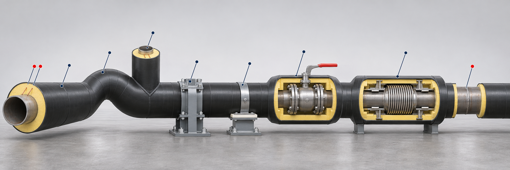

Основа ассортимента
Не 12 разрозненных товаров, а одна трубопроводная система
Менеджер начинает не с артикула, а с функции узла: перенести среду, сохранить тепло, принять перемещение, загерметизировать стык, обнаружить увлажнение или защитить от внешней нагрузки.

Четыре слоя понимания
| Слой | Задача | Группы ТИК |
|---|---|---|
| Несущая часть | Удерживает давление и переносит рабочую среду. | Трубы и фасонные изделия. |
| Движение и фиксация | Задаёт, где трасса двигается, а где удерживается. | Опоры, сильфонные, резиновые, сальниковые компенсаторы, СКУ. |
| Тепло и стык | Сокращает теплопотери и восстанавливает контур после сварки. | ППУ, ППМ, КЗС, скорлупы, термоусадка. |
| Контроль и защита | Выявляет увлажнение, защищает от коррозии и механического повреждения. | СОДК, ВУС/УС, ВУС-ленты, футляры и защитные узлы. |
12 групп и их место
| 1. ППУ | Заводская теплоизолированная труба/деталь: сталь + ППУ + ПЭ или ОЦ. |
|---|---|
| 2. КЗС | Комплект восстанавливает изоляцию, герметичность и цепь СОДК на сварном стыке. |
| 3. Компенсаторы | Неизолированные сильфонные и резиновые узлы для конкретных движений и сред. |
| 4. СКУ | Сильфонный компенсатор, встроенный в изолированный узел. |
| 5. Сальниковые | Компенсация осевого перемещения с обслуживаемым уплотнением. |
| 6. СОДК | Контроль состояния ППУ-изоляции по проводникам. |
| 7. Скорлупы | Ремонтная или дополнительная сегментная теплоизоляция. |
| 8. Термоусадка | Манжеты, ленты и материалы для герметизации и защиты. |
| 9. ППМ | Монолитная теплоизоляция другой конструкции; не «ППУ без трубы». |
| 10. ВУС/УС | Заводская полимерная антикоррозионная защита стали. |
| 11. ВУС-ленты | Рулонная система защиты стыков и ремонта покрытия. |
| 12. Мехзащита | Футляры и узлы, которые принимают внешние воздействия на переходах. |
Первые пять вопросов
- Что за объект и на каком участке нужно изделие?
- Что по трубе перемещается, каковы температура и давление?
- Какая прокладка: подземная, канальная, надземная, переход в футляре?
- Есть ли проект, спецификация, чертёж, опросный лист?
- Нужно ли само изделие или полный узел со стыками, крепежом, контролем и защитой?
Не обещать: прямую замену изделия из другой группы, совместимость только по DN, комплектность «как обычно» или монтажный режим без паспорта.
Самопроверка
Клиент просит «изолированную трубу». Что делать?
Не выбирать ППУ автоматически. Уточнить задачу и прокладку, запросить проектное обозначение, стальной диаметр/стенку, вид и тип изоляции, оболочку, ГОСТ стали и комплектность стыков.
Основа: каталог ТИК; отраслевой контекст: Saverhot.